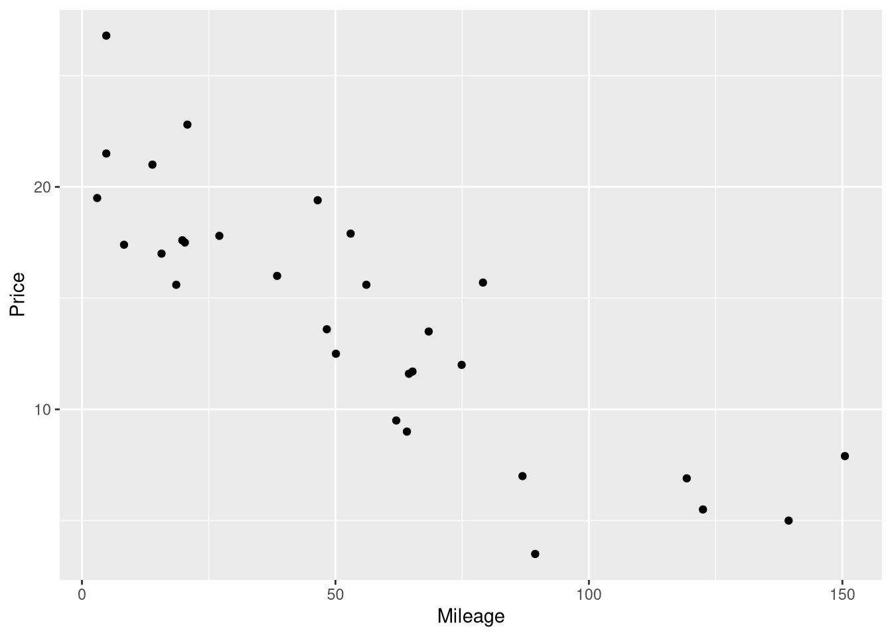
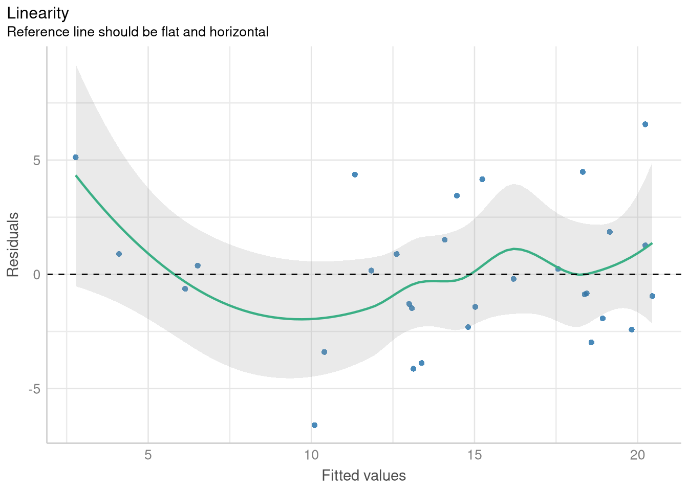

library(Stat2Data)1 Simple Linear Regression
1.1 The Simple Linear Regression Model
Linear regression is introduced in Chapter 1 with the motivating question:
How much should you expect to pay for a used Honda Accord, if you know how many miles the car has already been driven?
and introduces the AccordPrice data set, which contains information about the list price and mileage for a sample of 30 Honda Accords. The AccordPrice data set is included with the Stat2Data R package, so to access the data for yourself, you’ll need to install the package. If you don’t already know how to install R packages, here are two good resources to walk you through the process:
- Reading: ModernDive Chapter 1.3.1: Installing Packages
- Watching: How to Install Packages in R Studio on YouTube
Once you have the package installed, load the package into your R session using:
To load the AccordPrice data set into your R environment, use the command:
data("AccordPrice")As a side note: not much information is given in the text about how this sample of 30 Accords was collected, but we can gather a bit more information by looking at the help page for the AccordPrice data set. To open the help page for the AccordPrice data set, you can run the command
?AccordPricein the R console. By reading the “Details” and “Source” sections, we can learn that these 30 Accords were listed for sale on Cars.com in Lakewood Ohio during February 2017. Whenever you want to to know more about one of the textbook’s data sets, the help page for that data set is a good place to look first. Sometimes there’s not much more information than given in the textbook, but every little bit helps!
1.1.1 Exploring the AccordPrice data set
Figure 1.2 displays a scatter plot of the Mileage and Price variable, showing how those variables relate to one another. To re-produce this scatter plot, we’ll use the ggplot2 R package (Wickham 2016). If you’re not already familiar with the ggplot2 package, here are a few good resources to help you get started:
- Reading: ModernDive Chapter 2: Data Visualization
- Reading: Effective data visualization
- Watching: ggplot for plots and graphs on YouTube
To re-create this scatter plot, we’ll map the Mileage variable to x-axis aesthetic, and the Price variable to the y-axis aesthetic, and draw a layer of points to represent each of the 30 cars using geom_point()
library(ggplot2)
ggplot(data = AccordPrice,
mapping = aes(x=Mileage, y=Price)
) +
geom_point()
1.1.2 Modeling the Mileage vs. Price relationsip
Example 1.3 shows a summary of a simple linear regression model fit to the Mileage and Price variable in the AccordPrices data set. This summary is actually a mix of two different summaries, a regression table and an Analysis of Variance (ANOVA) table. Reproducing this summary will be a 3 step process in R:
- Fitting the model using the
lm()function - Printing the regression table with the
summary()function - Printing the ANOVA table with the
anova()function
1.1.3 Fitting a simple linear regression model
The lm() function (short for linear model) does the “heavy lifting’ of estimating the coefficients of the simple linear model. In other words, the lm() function find the optimal values for \(\hat{\beta_0}\) and \(\hat{\beta_1}\) in the model \(Price = \hat{\beta_0} + \hat{\beta_1} \cdot Mileage + \epsilon\).
To fit a linear regression model using lm, you need to supply:
- A formula describing relationship between the outcome and explanatory variable(s)
- The name of a data set where the outcome and explanatory variables can be found.
In this case, our call to the lm function would be:
price_mileage_model <- lm(Price ~ Mileage, data = AccordPrice)The first argument inside the lm() function is the formula describing the structure of the model. In R, model formulas are always created using the ~ symbol, with the outcome variable named on the left, and the explanatory variables(s) named on the right. As you might notice, R’s model formula code is an adaptation of how the model is described in mathematical notation.
Also, take note that we’ve saved the results from fitting this linear model in a new R object named price_mileage_model. We’ll need to use this new object to produce the regression table and the ANOVA table in steps 2 and 3 below.
1.1.4 Reporting the regression table
In order to report the regression table, we need to call the summary() function on the linear model object we just created:
price_mileage_model <- lm(Price ~ Mileage, data = AccordPrice)
summary(price_mileage_model)
Call:
lm(formula = Price ~ Mileage, data = AccordPrice)
Residuals:
Min 1Q Median 3Q Max
-6.5984 -1.8169 -0.4148 1.4502 6.5655
Coefficients:
Estimate Std. Error t value Pr(>|t|)
(Intercept) 20.8096 0.9529 21.84 < 2e-16 ***
Mileage -0.1198 0.0141 -8.50 3.06e-09 ***
---
Signif. codes: 0 '***' 0.001 '**' 0.01 '*' 0.05 '.' 0.1 ' ' 1
Residual standard error: 3.085 on 28 degrees of freedom
Multiple R-squared: 0.7207, Adjusted R-squared: 0.7107
F-statistic: 72.25 on 1 and 28 DF, p-value: 3.055e-09As we can see, the summary() function first prints out a few things not shown as part of the summary in the textbook: a copy of the code used to fit the model, and a the Five-number summary of the model’s residual errors. These are followed by the regression table summarizing the intercept and slope, and a “goodness of fit” summary of the model as whole.
1.1.5 Reporting the ANOVA table
The ANOVA table is found by calling the aptly named anova() function on the linear model, the same way we just did with the summary() function a moment ago:
price_mileage_model <- lm(Price ~ Mileage, data = AccordPrice)
anova(price_mileage_model)Analysis of Variance Table
Response: Price
Df Sum Sq Mean Sq F value Pr(>F)
Mileage 1 687.66 687.66 72.253 3.055e-09 ***
Residuals 28 266.49 9.52
---
Signif. codes: 0 '***' 0.001 '**' 0.01 '*' 0.05 '.' 0.1 ' ' 11.1.6 Adding the regression line to a scatterplot
Figure 1.3 shows the Price vs. Mileage scatter plot again, but this time with a line representing the regression model’s predictions drawn on top of the raw data. Surprisingly, the easiest method for visualizing the predictions of a regression model doesn’t involve the fitted model object. Instead, we will begin with the same ggplot code we used to draw the Mileage vs. Price scatter plot earlier, and add to it. The geom_smooth() function is used to draw the regression line on top of the raw data:
ggplot(data = AccordPrice,
mapping = aes(x = Mileage, y = Price)
) +
geom_point() +
geom_smooth(method = lm, se = FALSE, formula = y~x)geom_smooth() is a generic smoothing function: the key argument that tells it to fit and display a linear regression model is the method = lm argument. Without the method=lm argument, geom_smooth() will not display a linear model.
The se = FALSE argument is included to stop ggplot from drawing confidence interval bands around the regression line. And, the formula = y~x argument is included simply to prevent ggplot from printing an annoying message that says geom_smooth() using formula ‘y ~ x’
1.1.7 Residual Errors
An important component of any statistical model is the residual error - the difference between the observed value of the outcome variable, and the value your model predicted that outcome to be, based on the same explanatory variable value. No model will predict every observation in your data literally perfectly, and measuring the kinds of errors your model makes is crucial for knowing whether you’ve built a reasonable model of you data.
The residual errors will feature prominently when we assess the conditions for inference later in this chapter. For now, we’ll just learn how to compute the residual errors around your model predictions, but we won’t do anything more with those values.
The simplest way to compute the difference between observed outcome and predicted outcome for each observation in your data set is to use the residuals() function on your fitted model object:
price_mileage_model <- lm(Price ~ Mileage, data = AccordPrice)
residuals(price_mileage_model) 1 2 3 4 5 6 7
0.1643021 3.4404204 4.3675123 -2.3070342 -3.8812720 1.2654845 -6.5984246
8 9 10 11 12 13 14
4.4824757 6.5654845 -1.4226957 4.1616428 -0.9501770 -4.1296669 -2.4151737
15 16 17 18 19 20 21
0.2372910 -0.8774303 0.8855244 -3.3979545 -1.4817422 5.1220854 -1.2978738
22 23 24 25 26 27 28
1.5118375 0.8921728 1.8557732 -2.9811106 -1.9285653 -0.1968528 -0.8373363
29 30
0.3839526 -0.6326491 This returns a vector with as many elements as there are rows in your data set, and each element in the vector measures the residual error between model and data for that particular row. For example, the residual error for the Accord price in the first row of the data set was 0.1643021, meaning the model over-predicted it’s price by 0.1643021 thousand dollars (or, 164 dollars).
But, one shortcoming of this function is that the residual errors are separated from the observed outcome values and the predicted outcome values. If you only need the residuals this is not an issue, but more often than the not, you’ll need context to help understand and use the residuals effectively.
The augment() function from the broom() package produces a table that contains the original data the model was fit to, the predicted value for each observation, and the residual error for that observation:
library(broom)
price_mileage_model <- lm(Price ~ Mileage, data = AccordPrice)
augment(price_mileage_model)The predicted values are in the .fitted columns, and the residual errors are in the .resid column. The output holds many other pieces of information which will become useful in the future, but for now we can ignore the .hat, .sigma, .cooks, .std.resid columns.
1.1.8 Centering the Mileage Variable
Example 1.4 demonstrates how centering a variable (i.e., shifting all the values left or right by a single chosen number) changes the interpretation of the intercept coefficient, but not the slope coefficient. In this example, the Mileage variable is shifted to the left by 50; in other words, 50 is subtracted from all the Mileage values before fitting the model.
The easiest way to replicate this model is create a new variable in the AccordPrices data set which holds the centered Mileage values. To make this new column, we’ll use the mutate function from the dplyr package (Wickham et al. 2022). If you aren’t familiar with the mutate() function or the dplyr package, here are a few good resources to investigate:
- Reading: ModernDive Chapter 3: Data Wrangling
- Reading: Cleaning and Wrangling Data
- Watching: Dplyr Essentials on YouTube
In this case, the ‘mutation’ we apply is quite simple: we just use the subtraction operator to subtract 50, and R automatically applies this subtraction to all 30 values in the Mileage column.
library(dplyr)
AccordPrice <- AccordPrice |>
mutate(Mileage_c50 = Mileage - 50)
AccordPriceNote that we saved our centered mileage scores in a variable named Mileage_c50, to help us keep track of what these values mean: they are mileage values that have been centered by 50.
From here, we just need to fit another linear model with lm(), using our new Mileage_c50 variable as the explanatory variable in our model formula:
centered_mileage_model <- lm(Price ~ Mileage_c50, data = AccordPrice)The textbook only presents the fitted model equation (not the full regression table) in order to show the intercept and slope coefficients. If you ever need just the coefficient values, without the rest of the summaries in the regression table, you can use the coef() function on your model object to print them out:
centered_mileage_model <- lm(Price ~ Mileage_c50, data = AccordPrice)
coef(centered_mileage_model)(Intercept) Mileage_c50
14.8190154 -0.1198119 1.1.9 Displaying the fitted model equation
If you are using a literate programming environment (like an RMarkdown or Quarto document), you might find yourself wanting to display the fitted model equation in your document, formatted like a “fancy” mathematical equation. You could always write the LaTeX markup you need yourself, but the equatiomatic package (Anderson, Heiss, and Sumners 2022) can automatically generate what you need, straight from the model object itself!
To demonstrate, let’s display a formatted equation representing the fitted regression model based on the centered mileage scores by using the extract_eq() function on the model object.
library(equatiomatic)
centered_mileage_model <- lm(Price ~ Mileage_c50, data = AccordPrice)
extract_eq(centered_mileage_model, use_coefs = TRUE)\[ \operatorname{\widehat{Price}} = 14.82 - 0.12(\operatorname{Mileage\_c50}) \]
Warning
As the time of writing, there are problems with using the equatiomatic package to display equations when rendering Quarto documents to PDF. Thankfully, there is a workaround that is not too difficult, which involves saving the equation as a variable, and cat()-ing the equation yourself:
```{r}
#| results: asis
eq <- extract_eq(centered_mileage_model, use_coefs = TRUE)
cat("$$", eq, "$$", sep = "\n")
```\[ \operatorname{\widehat{Price}} = 14.82 - 0.12(\operatorname{Mileage\_c50}) \]
Just be sure to set the results: asis chunk option!
1.2 Conditions for a Simple Linear Model
Section 1.2 introduces mostly conceptual information about neccesary and sufficient conditions for interference on a linear model, but does introduce the formula for estimating the standard error of the regression (also called the “Residual Standard Error”). You’ll rarely need to use this formula “manually”, since the value of this statistic is included in the output from the summary() function:
price_mileage_model <- lm(Price ~ Mileage, data = AccordPrice)
summary(price_mileage_model)
Call:
lm(formula = Price ~ Mileage, data = AccordPrice)
Residuals:
Min 1Q Median 3Q Max
-6.5984 -1.8169 -0.4148 1.4502 6.5655
Coefficients:
Estimate Std. Error t value Pr(>|t|)
(Intercept) 20.8096 0.9529 21.84 < 2e-16 ***
Mileage -0.1198 0.0141 -8.50 3.06e-09 ***
---
Signif. codes: 0 '***' 0.001 '**' 0.01 '*' 0.05 '.' 0.1 ' ' 1
Residual standard error: 3.085 on 28 degrees of freedom
Multiple R-squared: 0.7207, Adjusted R-squared: 0.7107
F-statistic: 72.25 on 1 and 28 DF, p-value: 3.055e-09
If you ever need to obtain this value alone (without the rest of the summary table), you can use the sigma() function on the fitted model object to extract it;
sigma(price_mileage_model)[1] 3.085041.3 Assessing Conditions
Section 1.4 introduces two type of plots that crucial for assessing the validity of the assumptions underpinning theory-based inference on a regression model:
- The Fitted vs. Residuals Plot
- The Normal Quantile plot (which is a specific type of Quantile-Quantile plot)
There are many ways of generating thse plots from a linear model in R, but perhaps the easiest, most full-featured (and prettiest!) method is to use the tools from the performance package (Lüdecke et al. 2021).
The check_model() function from the performance package can be used to create both fitted vs. residuals plots, and Normal Quantile plots. What’s more, it can create different variations of fitted vs. residuals plots that are customized to help you check either the Linearity or the Homogeneity of Variance assumptions.
Tip
You’ll also want to install the patchwork and see packages at the same time you install the performance package, as these supplemental packages are very useful for constructing visualiations with the performance package.
1.3.1 Checking Linearity with a Fitted vs. Residuals plot
To generate a variant of the Fitted vs. Residuals plot designed to help you assess the Linearity assumption, you’ll include the check="linearity" argument to the check_model() function. The panel=FALSE argument instructs the check_model() function to devote the entire plot window to this plot (instead of leaving room for other plots checking other model assumptions).
library(performance)
library(see)
price_mileage_model <- lm(Price ~ Mileage, data = AccordPrice)
linearity_check <- check_model(price_mileage_model, check="linearity",
panel=FALSE
)
plot(linearity_check, data=price_mileage_model)$NCV
One odd thing to note: you need to pass the fitted model object as the data arguemnt to the plot function, not the original data set.
1.3.2 Checking Homogeneity of Variance with a Fitted vs. Residuals plot
The only thing that changes for producing a a Fitted vs. Residuals plot designed to check for homoskedasticity (a fancy word for “equal variance”) is writing check="homogeneity" in the check_model() function:
variance_check <- check_model(price_mileage_model, check="homogeneity",
panel=FALSE
)
plot(variance_check, data=price_mileage_model)$HOMOGENEITY
1.3.3 Checking Normality with a Normal-Quantile plot
normality_check <- check_model(price_mileage_model, check="qq",
panel=FALSE
)
plot(normality_check, data=price_mileage_model)For confidence bands, please install `qqplotr`.$QQ
1.4 Transformations/Reexpressions
Section 1.4 introduces a new data set and new model into the mix, to demonstrate how transformations of the outcome and/or explantory variable may be useful when the conditions for a simple linear regression model are not met.
The CountyHealth data set measures the number of doctors and the number of hospitals from 53 Counties in the United States.
data(CountyHealth)
CountyHealthExample 1.7 explores a simple linear model which casts the number doctors in the county as a function of how many hospitals are in the county. However, when we fit this model, we see that not all the conditions for inference seem reasonable
doctor_model <- lm(MDs ~ Hospitals, data = CountyHealth)
extract_eq(doctor_model, use_coefs = TRUE)\[ \operatorname{\widehat{MDs}} = -1120.56 + 557.32(\operatorname{Hospitals}) \]
ggplot(CountyHealth, aes(x=Hospitals, y= MDs)) +
geom_point() +
geom_smooth(method=lm, se=FALSE, formula=y~x) +
scale_y_continuous(breaks=seq(0,8000,by=2000))
check_model(doctor_model, check=c("homogeneity", "qq"))
The residual errors around this model’s predictions grow larger and more variable as the number of hospitals increases, and they don’t follow a Normal distribution. But, modeling the square root of the number of doctor’s alleviates these problems.
There are several ways you can adjust to modeling the square root ofa variable. One method is to make a new variable in the data set that holds the transformed values, following the process we did in Section 1.1.8 (where we used the mutate() function to help center the Mileage variable).
Another method is to apply the transformation within the model formula itself! We can apply the sqrt() function to the MDs variable at the same time fit the model:
sqrt_doctor_model <- lm(sqrt(MDs) ~ Hospitals, data = CountyHealth)
coef(sqrt_doctor_model)(Intercept) Hospitals
-2.753326 6.876364 One advantage of doing the transformation directly in the model formula is that the extract_eq() function is able to detect the transformation, and include it in the equation!
extract_eq(sqrt_doctor_model, use_coefs = TRUE)\[ \operatorname{\widehat{sqrt(MDs)}} = -2.75 + 6.88(\operatorname{Hospitals}) \]
The diagnostics plots based on the model using the \(\sqrt{MDs}\) variable indicate that the Normality assumption is met, and the Equal Variance is much more tenable on the transformed scale:
sqrt_doctor_model <- lm(sqrt(MDs) ~ Hospitals, data = CountyHealth)
check_model(sqrt_doctor_model, check=c("homogeneity", "qq"))
1.4.1 Visualizing Transformed Models
Often times when an assumption is violated, we may decide to fit the model on a transformed scale, but visualize the model’s predictions on the original scale (since the original scale is more interpretable than say, the square-root scale).
The easiest way to do this when plotting with ggplot and geom_smooth() is to use a square root scale transformation, following by a coordinate transformation that squares the y-axis values (thus reversing the square root operation). What makes this work is that the scale transformation occurs first, so geom_smooth() fits and draws the model on the transformed (and linear!) scale, and coordinate transformation follows, so the model’s predictions are presented on the “raw” scale.
ggplot(CountyHealth, aes(x=Hospitals, y= MDs)) +
geom_point() +
geom_smooth(method=lm, se=FALSE, formula=y~x) +
scale_y_sqrt(breaks=seq(0,8000,by=2000), expand=c(0,10)) +
coord_trans(y = scales::trans_new("square", function(x) x^2, "sqrt"))
Another approach is to manually compute a grid of predictions for each x-axis position using the fitted model equation, then square and plot each predicted value. Though not demonstrated with transformations specifically, this type of approach is demonstrated in Chapter 2, when plotting prediction intervals.
1.4.2 Log-Transformed Outcome Variables
All the previous techniques for modeling and visualizing the square-root of an outcome variable applicable to modeling with variables that have been transformed with the logarithmic function as well: we just use the log() function instead of the sqrt() function!
As an example, we can reproduce the fitted model, predictions and visualizations from Example 1.8, where the logarithm of the number of mammal species from 13 islands in Southeast Asia is modeled using the logarithm of the Area of the island as an explanatory variable. Since both variables have been transformed, this type of model is know as a “log-log model”.
data("SpeciesArea")
SpeciesArealog_species_model <- lm(log(Species) ~ log(Area), data = SpeciesArea)
extract_eq(log_species_model, use_coefs = TRUE)\[ \operatorname{\widehat{log(Species)}} = 1.62 + 0.24(\operatorname{\log(Area)}) \]
ggplot(SpeciesArea, aes(x = Area, y = Species)) +
geom_point() +
geom_smooth(method=lm, se=FALSE, formula=y~x) +
scale_x_continuous(trans = "log") +
scale_y_continuous(trans = "log")